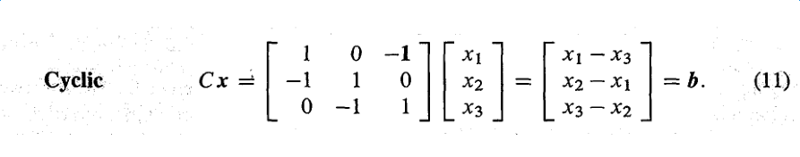

Table of Contents
1 Linear Algebra
Preface
The crucial operation in linear algebra is taking linear combinations of vectors
Ax = b
how to solve it ? three levels:
- Direct solution by forward elimination and back substitution
- Matrix solution using inverse of A: x = A-1b (basis: A has an inverse)
- Vector space solution x = y + z: Particular solution (to Ay = b) plus nullspace solution (to Az = 0)
1.0.1 Structure
numbers -> vectors -> subspaces
1.1 Chapter 1: Introduction to the Vectors
The heart of linear algegra lies in two operations: addition and multiply, which operates on vectors.
- addition: v + w
- multiply: c v, d w
- combinations: c v + d w
for two-dimensional vectors, their combinations fill the whole two-dimensional plane.
1.1.1 Vector additions and linear combinations
DEFINITION The sum of c v + d w is a linear combination of v and w
- What is the picture of all combinations c u ?
- What is the picture of all combinations c u + d v ?
- What is the picture of all combinations c u + d v + e w ?
1.1.2 The dot product of v ⋅ w and the length || v || = \sqrt{*v* \cdot *v*}
DEFINITION The dot product or inner product of v = (v1, v2) and w = (w1, w2) is the number: v ⋅ w = v1*w1 + v2*w2.
Perpendicular Vectors: dot product is zero.
Properties of dot product:
- commutative law: v ⋅ w = w ⋅ v
- distributive law: a ⋅ (b + c) = a ⋅ b + a ⋅ c
- bilinear: a ⋅ (γ b + c) = γ a ⋅ b + a ⋅ c
- scalar multiplication (c1 a) ⋅ (c2 b) = c1 c2 a ⋅ b
- orthogonal: a ⋅ b = 0
Caution:
- Not associative: a \codt b ⋅ c is not right (think about it)
- No cancellation: a ⋅ b = a ⋅ c not ⇒ b = c
Length And unit Vectors
DEFINITION The length of a vector a is \sqrt{*a* \cdot *a*}
DEFINITION A unit vector u is a vector whose length is one, thus u ⋅ u = 1
For any vector v, v / || v || is a unit vector(v is not a zero vector)
Unit vectors u and U at angle θ have u ⋅ U = cosθ. Certainly | u ⋅ U | ≤ 1.
COSINE FORMULA: If v and u are nonzero vectors then v ⋅ u / || v || || u || = cosθ.
SCHWARZ INEQUALITY: | w ⋅ v | ≤ || w || * || v ||
TRIANGLE INEQUALITY: || w + v || ≤ || w || + || v ||
Besides
Cauchy–Schwarz inequality:
Background: The inequality for sums was published by Augustin-Louis Cauchy (1821), while the corresponding inequality for integrals was first proved by Viktor Bunyakovsky (1859). The modern proof of the integral inequality was given by Hermann Amandus Schwarz (1888)
For all vectors u and v of an inner product space it is true that: || u ⋅ v ||2 ≤ || u ||2 * || v ||2.
Application: Analysis, Geometry, Probability theory
1.1.3 Matrices A, linear equations Ax = b, solutins x = A-1b
Combinations: c[1, -1, 0]T + d[0, 1, -1]T + e[0, 0, 1]T = [c, d-c, e-d]T. Now we transform it to matrice, vectors u, v and w go into the columns of matrix A: (c, d, e) are the components of vector x.(think about it, why (c, d, e) are components of a vector x). See the picture below:
Linear Equations
One more change in viewpoint is crucial, Now we think of b as known and we look for x.
Old question: Compute the linear combination x1 u + x2 v + x3 w to find b. New question: Which combination of u, v, w produces a particular vector b?
The Inverse Matrix
The sum matrix S in equation (7) is the inverse of the difference matrix A.
Cyclic Differences

This matrix C is not triangular. It is not so simple to solve for x when we are given h. Actually it is impossible to find the solution to ex = b, because the three equations either have infinitely many solutions or else no solution.
Independence and Dependence
Independence: w is not in the plane of u and v. Dependence: w* is in the plane of u and v.